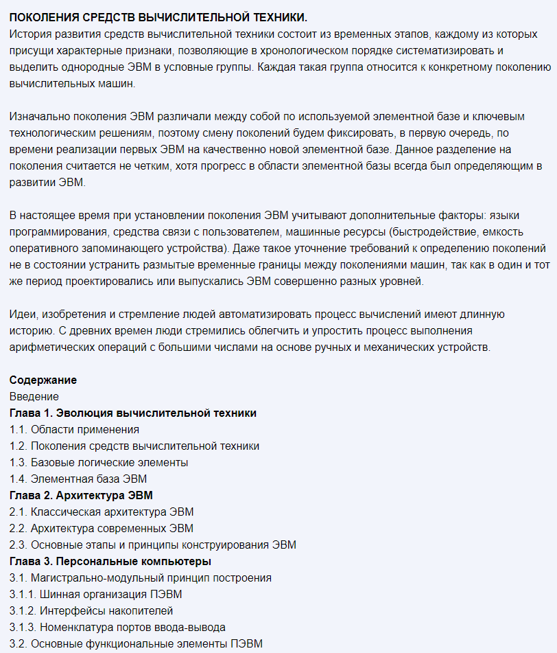
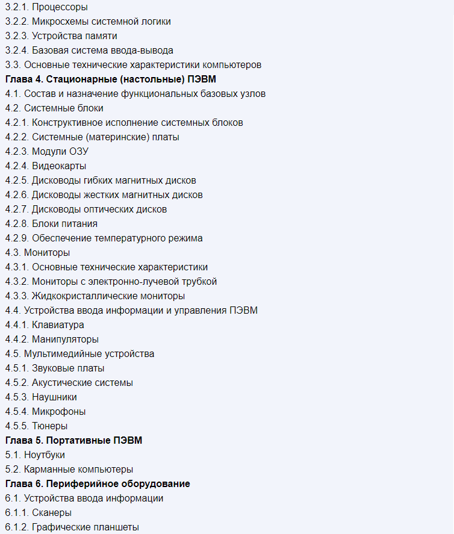

Библиотека
Научно-техническая
Аппаратное обеспечение ЭВМ
Сидоров В.Д., Струмпэ Н.В. | 2014
ВВЕДЕНИЕ
В последние годы значительно усилилось влияние мировых информационно-коммуникационных ресурсов и технологий на социальное и экономическое развитие народов и стран. Мир вошел в стадию перехода к новому типу общества — информационному. Информационное (постиндустриальное) общество — это новая социально-технологическая организация жизни людей, заменяющая действующую индустриальную систему, которая в свое время вытеснила аграрную системуПроявления постиндустриального общества с каждым годом становятся все заметнее: - множатся направления деятельности людей, связанные с обработкой данных, информацией и электронным управлением предприятиями, организациями и даже государствами; - ключевую роль во всех сферах человеческого общения играет информация и быстрота ее использования; - жизнь людей все больше сводится к информационному взаимодействию на расстоянии; - распространяются новые виды дистанционных информационных услуг: гуманитарных (образование, здравоохранение, социальные службы); профессиональных (программирование, анализ и планирование производства и финансирования); - происходит реорганизация экономики и переход к новым высокотехнологичным специальным производствам, в которых задействованы огромные объемы информации.
Экономика главным образом основывается не только на естественных ресурсах и материальном производстве, но и на полноправном владении информацией, применении научно-технических знаний и предоставлении информационных услуг.
Мировые тенденции свидетельствуют о том, что информация уже вошла в один ценовой ряд с традиционными сырьевыми и энергетическими ресурсами. Из года в год растет объем рынка информационных услуг и программного обеспечения.
Национальные информационные ресурсы стали значимым продуктом интеллектуальной деятельности активной части населения и мощным инструментом достижения социальных, политических и экономических целей многих государств. Грамотное распределение этих жизненно важных ресурсов, контроль и управление ими в краткосрочном и долгосрочном плане для решения национальных и международных проблем является задачей наивысшей значимости и для России.
Информация, в том числе хранящаяся в электронных вычислительных машинах, давно стала национальным достоянием, поэтому в мире происходит непрерывная борьба за доступ к чужим знаниям — информационные войны. Явные и скрытые целенаправленные действия информационного оружия государственных структур других стран, криминальных группировок и отдельных хакеров на технические средства и многонациональное население России создают внешние и внутренние угрозы по навязыванию ложной информации, краже, уничтожению отдельных файлов, баз данных или обнародованию сугубо личных данных. Гарантированная защита информации ограниченного доступа в России обеспечивается не только государственными законами, но и специальными аппаратно-программными средствами, в том числе засекречиванием данных с различными грифами секретности.
Современные информационно-коммуникационные технологии (ИКТ), позволяющие создавать, хранить, обрабатывать данные (открытого и ограниченного доступа) и обеспечивать эффективные способы доставки и представления информации пользователям, становятся немаловажным средством повышения эффективности всех сфер общественной деятельности и одним из существенных факторов успешного экономического и безопасного развития России.
В России дальнейшее повышение результативности экономики, государственного и муниципального управления за счет внедрения и массового распространения ИКТ, обеспечение прав граждан на свободный доступ к информации, расширение подготовки специалистов и пользователей по информационным технологиям нашло отражение в Федеральной целевой программе «Электронная Россия».
Ссылка на книгу  